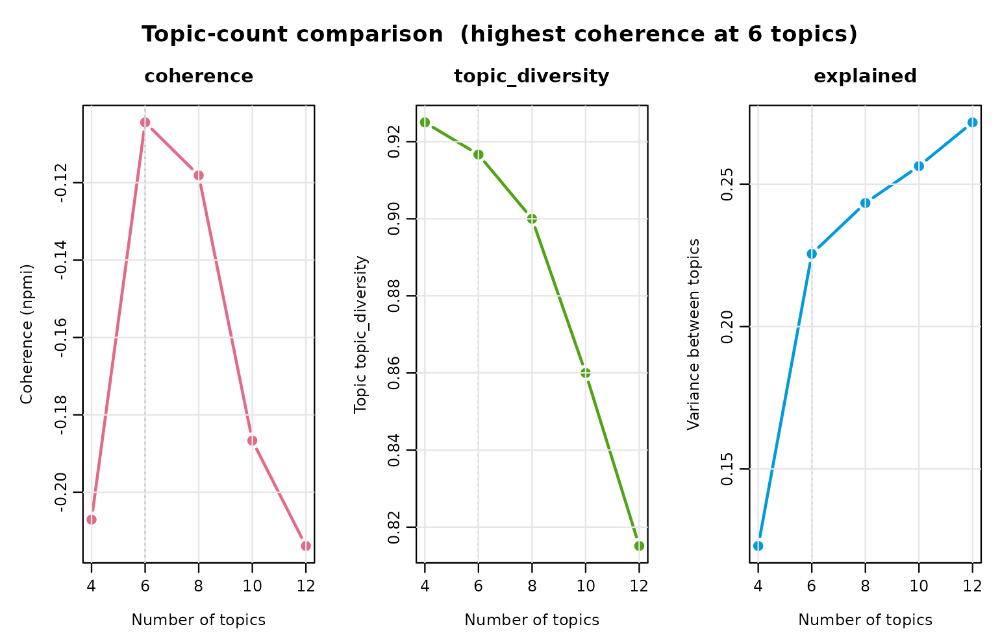
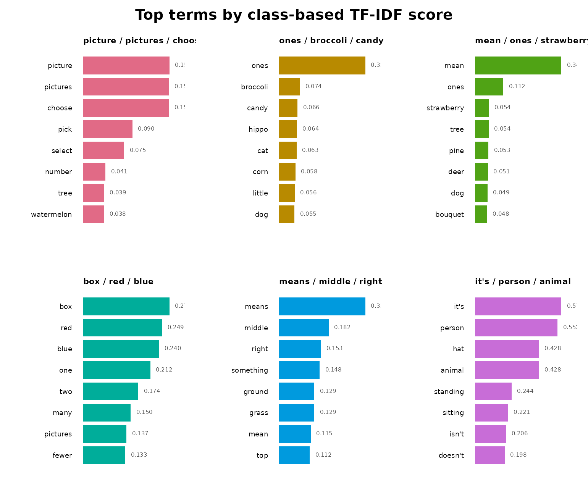
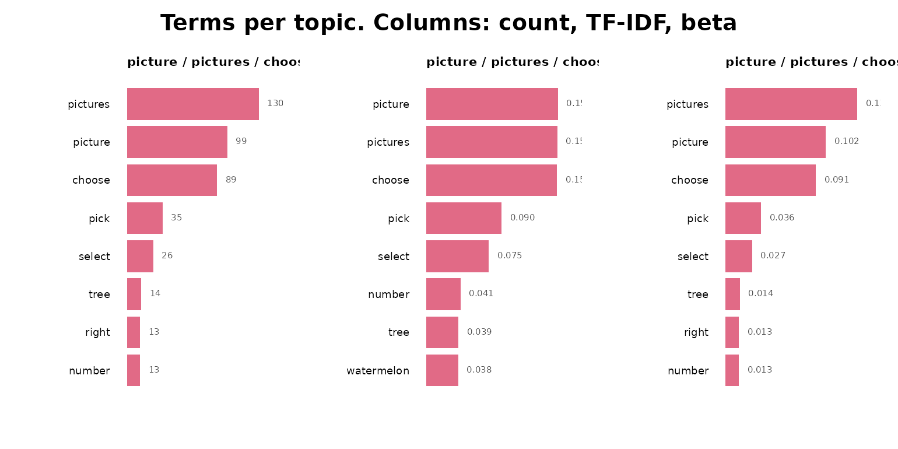
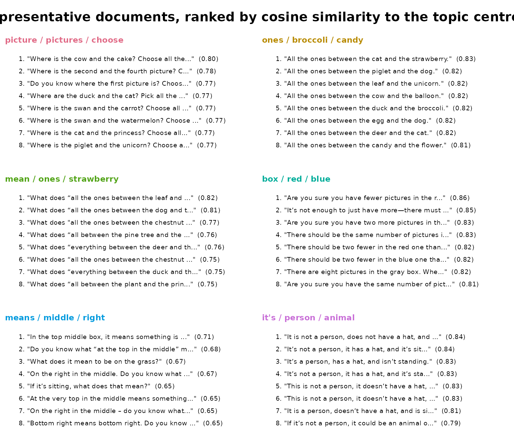
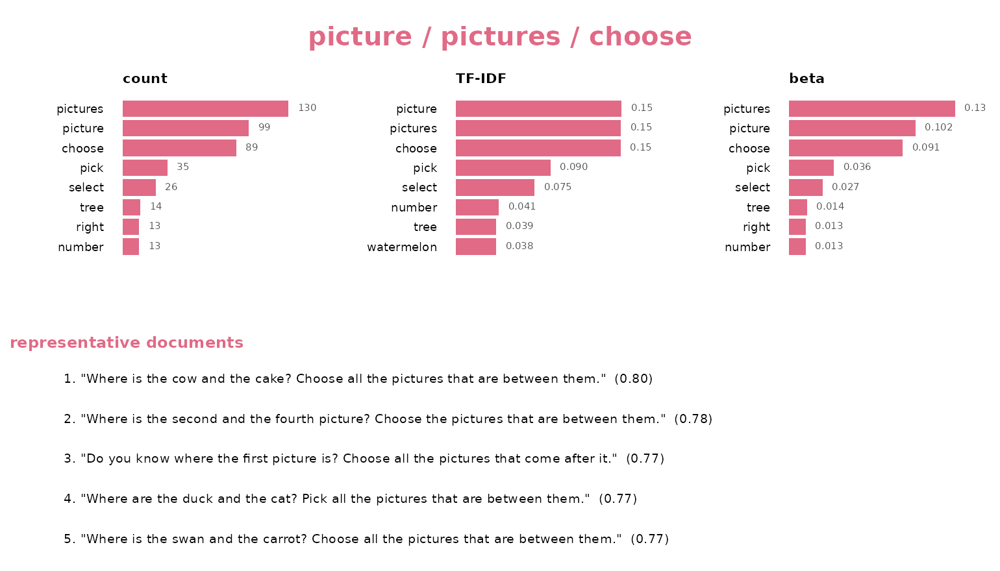

This tutorial fits a topic model end to end on real data and reads the result. Every step is one verb with named arguments returning a data frame you print directly.
The data
feedback_translations ships with the package: 8,757
AI-generated mathematics feedback messages from the Levebee application,
each paired with an English translation. The source languages include
Czech, Slovak, Polish, German, Hungarian, Romanian, Ukrainian, Russian,
Mongolian, and Vietnamese.
head(feedback_translations)
#> feedback
#> 1 Víš, co znamená o jeden více?
#> 2 V červeném má být o dva více než v modrém.
#> 3 Když to není člověk, tak co to může být?
#> 4 Co znamená všechny za prvním?
#> 5 V šedém rámečku je pět obrázků. Kde je o jeden obrázek méně?
#> 6 Podle čeho se obrázky střídají?
#> translation
#> 1 Do you know what “one more” means?
#> 2 There should be two more in the red than in the blue.
#> 3 If it’s not a person, what could it be?
#> 4 What does “everyone after the first one” mean?
#> 5 There are five pictures in the gray box. Where is there one picture less?
#> 6 How do the pictures alternate?The messages are short instructional hints, and some repeat verbatim
— “Try again.” is the most common, appearing 11 times. That matters for
topic modeling, because a heavily repeated template would otherwise pull
a topic toward itself. dedupe() collapses repeats and
records how often each one occurred:
Embedding
Encoding is the one expensive step, so do it once and reuse the matrix:
install_runtime()
model_download()
embeddings <- encode(corpus$text, batch_size = 64)To keep this vignette buildable without a download, the remaining
chunks use a precomputed matrix for 600 of those messages, encoded with
the pinned all-MiniLM-L6-v2:
Choosing how many topics
There is no correct topic count. select_topics() fits
one model per candidate and reports the numbers that justify a choice —
so you pick from a table rather than by habit:
sweep <- select_topics(
text,
n_topics = c(4, 6, 8, 10, 12),
embeddings = embeddings,
measure = "npmi"
)
sweep
#> <sbert_topic_sweep> 5 candidates, coherence measure: npmi
#> n_topics coherence topic_diversity explained
#> 4 -0.2070855 0.9250000 0.1229819
#> 6 -0.1044246 0.9166667 0.2255144
#> 8 -0.1181287 0.9000000 0.2433832
#> 10 -0.1866628 0.8600000 0.2563262
#> 12 -0.2138928 0.8151261 0.2716759
#>
#> Fitted models retained: fitted(x, n_topics = 6)Read it this way: coherence measures whether a topic’s top terms
actually co-occur, diversity whether topics repeat each other’s
vocabulary, and explained how much embedding variance sits
between topics rather than within them. Coherence usually falls as
counts rise while explained always rises, so the useful
signal is the count after which coherence stops improving — not
a global maximum.
plot(sweep)
The sweep keeps every model it fitted, so committing to one costs nothing:
fit <- fitted(sweep, n_topics = 6)
fit
#> <sbert_topic_model>
#> documents: 600
#> topics: 6
#> model: precomputed embeddings
#> algorithm: deterministic k-means (Lloyd)
#> topic sizes: 223, 133, 131, 49, 37, 27
#> between/total SS: 22.6%Reading the topics
summary() is the report: sizes, quality, and the terms
that define each topic.
summary(fit)
#> Semantic topic model summary
#> documents: 600
#> topics: 6
#> model: precomputed embeddings
#> between/total SS: 22.6%
#> mean npmi coherence: -0.1044
#> topic topic_diversity: 0.917 (top 10 terms)
#>
#> topic label n_documents proportion coherence
#> 1 picture / pictures / choose 223 0.37167 -0.2368
#> 2 ones / broccoli / candy 133 0.22167 -0.4150
#> 3 mean / ones / strawberry 131 0.21833 -0.2564
#> 4 box / red / blue 49 0.08167 0.3011
#> 5 means / middle / right 37 0.06167 -0.2043
#> 6 it's / person / animal 27 0.04500 0.1849Terms are ranked by class-based TF-IDF, which favours words that separate this topic from the others:
head(terms(fit, n = 5), 15)
#> topic label term rank score frequency
#> 1 1 picture / pictures / choose picture 1 0.15812657 99
#> 2 1 picture / pictures / choose pictures 2 0.15734447 130
#> 3 1 picture / pictures / choose choose 3 0.15707789 89
#> 4 1 picture / pictures / choose pick 4 0.09026252 35
#> 5 1 picture / pictures / choose select 5 0.07513736 26
#> 6 2 ones / broccoli / candy ones 1 0.30963920 82
#> 7 2 ones / broccoli / candy broccoli 2 0.07420924 9
#> 8 2 ones / broccoli / candy candy 3 0.06596377 8
#> 9 2 ones / broccoli / candy hippo 4 0.06377882 8
#> 10 2 ones / broccoli / candy cat 5 0.06277479 8
#> 11 3 mean / ones / strawberry mean 1 0.34359216 130
#> 12 3 mean / ones / strawberry ones 2 0.11237273 38
#> 13 3 mean / ones / strawberry strawberry 3 0.05446666 9
#> 14 3 mean / ones / strawberry tree 4 0.05377455 10
#> 15 3 mean / ones / strawberry pine 5 0.05259430 8
#> beta
#> 1 0.10174717
#> 2 0.13360740
#> 3 0.09146968
#> 4 0.03597122
#> 5 0.02672148
#> 6 0.21025641
#> 7 0.02307692
#> 8 0.02051282
#> 9 0.02051282
#> 10 0.02051282
#> 11 0.26104418
#> 12 0.07630522
#> 13 0.01807229
#> 14 0.02008032
#> 15 0.01606426Distinctive is not the same as frequent. To see the words a topic
simply uses most — its raw
— sort by beta instead:
head(terms(fit, n = 5, sort_by = "beta"), 15)
#> topic label term rank score frequency
#> 1 1 picture / pictures / choose pictures 1 0.15734447 130
#> 2 1 picture / pictures / choose picture 2 0.15812657 99
#> 3 1 picture / pictures / choose choose 3 0.15707789 89
#> 4 1 picture / pictures / choose pick 4 0.09026252 35
#> 5 1 picture / pictures / choose select 5 0.07513736 26
#> 6 2 ones / broccoli / candy ones 1 0.30963920 82
#> 7 2 ones / broccoli / candy broccoli 2 0.07420924 9
#> 8 2 ones / broccoli / candy candy 3 0.06596377 8
#> 9 2 ones / broccoli / candy cat 4 0.06277479 8
#> 10 2 ones / broccoli / candy corn 5 0.05843647 8
#> 11 3 mean / ones / strawberry mean 1 0.34359216 130
#> 12 3 mean / ones / strawberry ones 2 0.11237273 38
#> 13 3 mean / ones / strawberry pictures 3 0.03783656 16
#> 14 3 mean / ones / strawberry tree 4 0.05377455 10
#> 15 3 mean / ones / strawberry strawberry 5 0.05446666 9
#> beta
#> 1 0.13360740
#> 2 0.10174717
#> 3 0.09146968
#> 4 0.03597122
#> 5 0.02672148
#> 6 0.21025641
#> 7 0.02307692
#> 8 0.02051282
#> 9 0.02051282
#> 10 0.02051282
#> 11 0.26104418
#> 12 0.07630522
#> 13 0.03212851
#> 14 0.02008032
#> 15 0.01807229Term settings can be changed without refitting anything, because terms depend only on the fitted assignments and the text:
head(terms(fit, n = 5, weighting = "bm25"), 10)
#> topic label term rank score frequency
#> 1 1 picture / pictures / choose choose 1 0.13868736 89
#> 2 1 picture / pictures / choose picture 2 0.13374923 99
#> 3 1 picture / pictures / choose pictures 3 0.10811433 130
#> 4 1 picture / pictures / choose pick 4 0.08680351 35
#> 5 1 picture / pictures / choose select 5 0.07303796 26
#> 6 2 ones / broccoli / candy ones 1 0.25452287 82
#> 7 2 ones / broccoli / candy broccoli 2 0.07265190 9
#> 8 2 ones / broccoli / candy candy 3 0.06457947 8
#> 9 2 ones / broccoli / candy hippo 4 0.06235970 8
#> 10 2 ones / broccoli / candy cat 5 0.06133385 8
#> beta
#> 1 0.09146968
#> 2 0.10174717
#> 3 0.13360740
#> 4 0.03597122
#> 5 0.02672148
#> 6 0.21025641
#> 7 0.02307692
#> 8 0.02051282
#> 9 0.02051282
#> 10 0.02051282If a word appears in nearly every document it defines nothing. Exclude it and look again:
head(terms(fit, n = 5, stop_words = stop_words(add = c("try", "click"))), 10)
#> topic label term rank score frequency
#> 1 1 picture / pictures / choose picture 1 0.15819045 99
#> 2 1 picture / pictures / choose pictures 2 0.15739251 130
#> 3 1 picture / pictures / choose choose 3 0.15714708 89
#> 4 1 picture / pictures / choose pick 4 0.09031469 35
#> 5 1 picture / pictures / choose select 5 0.07518373 26
#> 6 2 ones / broccoli / candy ones 1 0.30943987 82
#> 7 2 ones / broccoli / candy broccoli 2 0.07418199 9
#> 8 2 ones / broccoli / candy candy 3 0.06593954 8
#> 9 2 ones / broccoli / candy hippo 4 0.06375471 8
#> 10 2 ones / broccoli / candy cat 5 0.06275073 8
#> beta
#> 1 0.10185185
#> 2 0.13374486
#> 3 0.09156379
#> 4 0.03600823
#> 5 0.02674897
#> 6 0.21025641
#> 7 0.02307692
#> 8 0.02051282
#> 9 0.02051282
#> 10 0.02051282Evidence for each topic
Terms describe a topic; documents prove it.
representatives() ranks by margin — how much more a
document belongs to its own topic than to its closest rival — which
surfaces the clear cases rather than merely the central ones:
head(representatives(fit, n = 2), 8)
#> topic rank
#> 1 1 1
#> 2 1 2
#> 3 2 1
#> 4 2 2
#> 5 3 1
#> 6 3 2
#> 7 4 1
#> 8 4 2
#> text
#> 1 Where is the cat and the princess? Choose all the pictures that are between them.
#> 2 Where is the cup and the balloon? Select all the pictures that are between them.
#> 3 All the ones between the grape and the tram.
#> 4 All the ones between the fly and the cat.
#> 5 What does “all between the plant and the princess” mean?
#> 6 What does “all the ones between the leaf and the unicorn” mean?
#> 7 There should be two fewer in the red one than in the blue one.
#> 8 There should be two fewer in the blue one than in the red one.
#> distance margin
#> 1 0.2342085 0.3007396
#> 2 0.2850857 0.2922610
#> 3 0.2641428 0.3146493
#> 4 0.2080425 0.3134329
#> 5 0.2518425 0.3209479
#> 6 0.1835523 0.2937963
#> 7 0.1805440 0.5532961
#> 8 0.1838668 0.5515990Quality
coherence(fit, measure = "npmi")
#> topic label measure n_terms coherence
#> 1 1 picture / pictures / choose npmi 10 -0.2367956
#> 2 2 ones / broccoli / candy npmi 10 -0.4150297
#> 3 3 mean / ones / strawberry npmi 10 -0.2563526
#> 4 4 box / red / blue npmi 10 0.3010516
#> 5 5 means / middle / right npmi 10 -0.2043292
#> 6 6 it's / person / animal npmi 10 0.1849079
topic_diversity(fit)
#> [1] 0.9166667Diversity is the share of distinct terms across all topics’ term lists: 1 means no topic repeats another’s vocabulary, low values mean the model has split one theme several ways.
Which topics are neighbours?
tree <- topic_hierarchy(fit)
tree
#> <sbert_topic_hierarchy> 6 topics, 5 merges (cosine distance)
#>
#> step height left
#> 1 0.2972668 topic 3 (mean / ones / strawberry)
#> 2 0.3199983 topic 1 (picture / pictures / choose)
#> 3 0.5163521 merge 1
#> 4 0.6351317 topic 4 (box / red / blue)
#> 5 0.7383564 topic 6 (it's / person / animal)
#> right
#> topic 5 (means / middle / right)
#> topic 2 (ones / broccoli / candy)
#> merge 2
#> merge 3
#> merge 4
plot(tree)Merging down the tree is not the same as refitting at a smaller count: it keeps the finer structure as a nesting, which is usually what you want for reporting.
smaller <- reduce_topics(fit, n_topics = 5)
smaller
#> <sbert_topic_model>
#> documents: 600
#> topics: 5
#> model: precomputed embeddings
#> algorithm: hierarchical merge of deterministic k-means topics
#> topic sizes: 223, 168, 133, 49, 27
#> between/total SS: 4.4%Assigning new messages
Hard assignment gives each document one topic. When you need the full picture — how strongly every document belongs to every topic — ask for membership:
head(topic_membership(fit), 8)
#> document_id topic probability rank
#> 1 1 3 8.222489e-01 1
#> 2 1 5 9.239112e-02 2
#> 3 1 4 7.655749e-02 3
#> 4 1 2 4.998566e-03 4
#> 5 1 6 2.140314e-03 5
#> 6 1 1 1.663651e-03 6
#> 7 2 4 9.999992e-01 1
#> 8 2 1 4.087932e-07 2Probabilities sum to 1 within a document, and rank 1 is
its strongest topic.
Visual summary
plot() renders a fitted model several ways. Sizes counts
documents per topic:
plot(fit, type = "sizes")
type = "terms" defaults to the class-based TF-IDF terms.
The by argument switches the ranking to the raw
within-topic count ("frequency") or the generative
probability ("beta"), and accepts several metrics at once —
one column each — so the says-most and
says-distinctively views sit side by side (shown here for one
topic):
plot(fit, type = "terms")

type = "representatives" lists each topic’s
centroid-nearest messages — the evidence that a label means what it
claims. Ask for more than the model stored and they are recomputed from
the retained embeddings:
plot(fit, type = "representatives", n_representatives = 8)
type = "fit" is the whole per-topic report in one figure
— all three term views beside the representative documents, one row per
topic. per_topic = TRUE gives each topic its own figure
with the documents stacked beneath the terms (shown here for a single
topic):
plot(fit, type = "fit", per_topic = TRUE, topics = 1)
Guided topics
When you already know what you are looking for, seed it. Seeds become the starting centroids and name their topics:
guided <- topics(
text,
n_topics = 4,
embeddings = embeddings,
seeds = c(
praise = "well done excellent correct answer",
retry = "try again check your answer",
instruction = "read the task and choose the picture",
counting = "count the numbers and add them"
)
)With fixed_seeds = TRUE the centroids are frozen and
every document is assigned to its nearest seed — zero-shot
classification into categories you defined.
Where to go next
-
keywords()extracts keywords from documents directly, without a topic model. -
segment()splits documents into sentences or clauses, andblend()carries each segment’s parent-document context into its embedding. -
?topicsdocuments every argument used above.